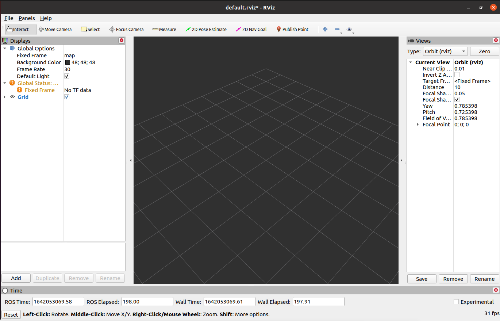

rviz2的简单介绍及使用
Rviz2是一个可视化工具，用于显示机器人环境中的消息，提供3D视角来查看机器人的状态和活动。它可以帮助开发者更好地理解机器人当前的状态和活动，以及其他可视化消息。Rviz2提供了一系列的可视化工具，可以帮助开发者更好地理解机器人的状态和活动，比如可视化坐标系、激光扫描消息、点云消息、机器人模型等等。使用Rviz2，可以轻松地查看和调试机器人系统，从而更好地实现机器人目标。
1 rviz2的安装及界面简介
ros2安装成功表明rviz2也一起安装成功了，因为ros2的安装包含了rviz2。
点击桌面上的ROS2 Shell图标或者桌面下方栏的对应图标，打开ROS2环境终端，输入命令打开rviz2：
ros2 run rviz2 rviz2
# 或
rviz2
打开rviz2,显示如下界面：

1.1 各个区域介绍
- 左侧为显示器列表，显示器是在3D世界中绘制某些内容的东西，并且可能在显示列表中具有一些可用的选项。包括添加、删除、复制、重命名插件，显示插件，以及设置插件属性等功能。
- 上方是工具栏，允许用户用各种功能按键选择多种功能的工具
- 中间部分为3D视图: 它是可以用三维方式查看各种数据的主屏幕。3D视图的背景颜色、固定框架、网格等可以在左侧显示的全局选项（Global Options）和网格（Grid）项目中进行详细设置。
- 下方为时间显示区域，包括系统时间和ROS时间等。
- 右侧为观测视角设置区域，可以设置不同的观测视角。
本部分我们只进行粗略的介绍，如果您想了解更多详细的内容，可以前往用户指南进行查看。
2 简单使用
通过launch文件启动
本例子建立在您已经完成环境搭建，并成功将本公司的代码从GitHub上复制下来的基础上。
打开ROS2环境终端，输入以下命令进行ROS2的环境配置。
cd ~/colcon_ws/
colcon build --symlink-install
source install/setup.bash
再输入：
ros2 launch mercury_b1 test.launch.py
打开rviz，并得到如下结果：

如果您想了解更多rviz的相关资料信息，您可以前往官方文档进行查看